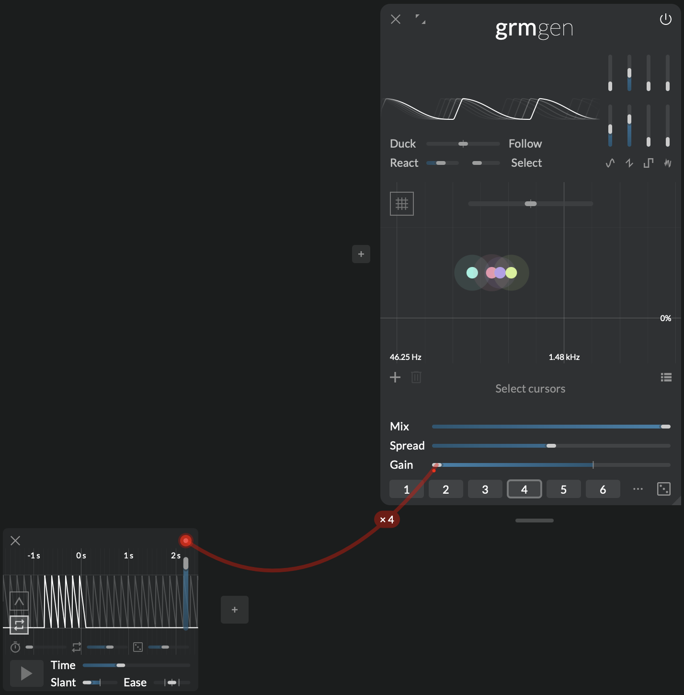
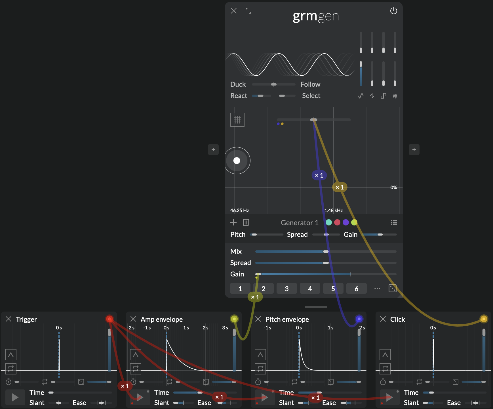
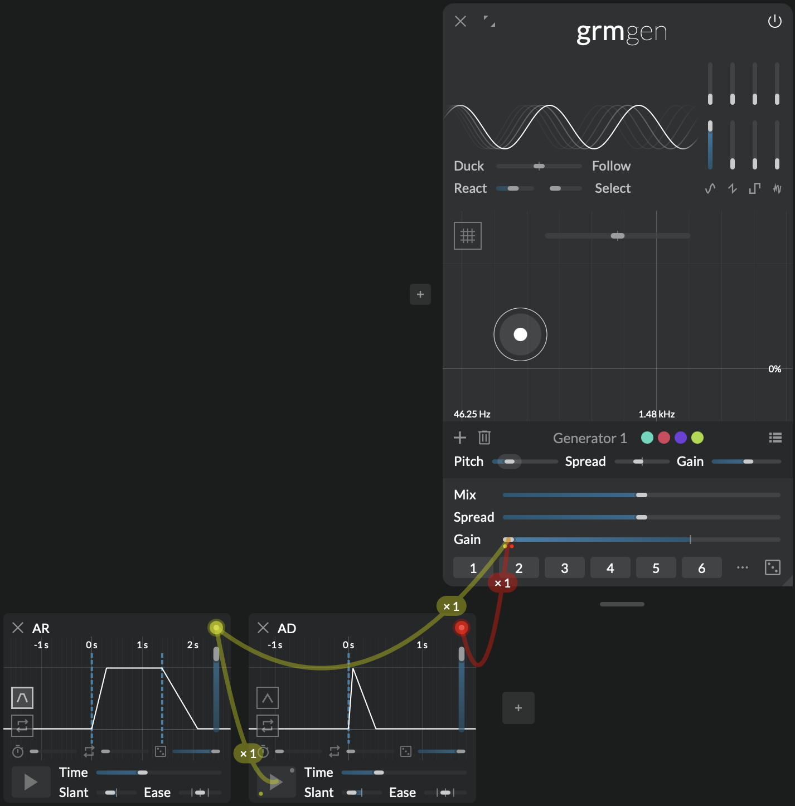

Everything transient
Peak

Peak is a simple envelope generator: it rises, then falls back down. Assign it to the gain of a sound source, you now have an actionable events trigger. But with its adjustable shape, looping and probability features, it goes a lot further than the traditional Attack-Decay envelope found in synthesizers, and combined with Atelier's rich modulation system it is able to generate a wide range of automatable transient waveforms... expected and unexpected.
Context
The simple two-segments envelope (Attack-Decay or Attack-Release) is the building block of envelope generators, from Serge's DUSG to GRM's own Coupigny synthesizer with its "Générateur d'envelope".
By default, it sits at zero (i.e. it does not change the value of its destination). When triggered, it waits a bit (Delay seconds), then rises to its maximum value (set by Amplitude), optionally holds there until released (Hold) then falls again to zero. Triggering it means clicking on (or holding) the Trigger button or a mapped MIDI control, but Trigger, like any parameter, can itself be modulated: just drag a wire from your modulator of choice to the Trigger button (in this case a positive modulation means triggered, a negative one means released). But triggering is always conditioned on a certain probability, set by Chance.
Once reaching zero again it can optionally retrigger. This depends on Repeat, which sets a fixed set of (unconditional) repeats and Infinite repeat, which makes Peak acts like an LFO.
Note
Peak is unipolar, meaning it only moves up from the destination parameter's set value. Therefore, to modulate across its full range of without clamping, the destination parameter must be set to its lowest value, and range set to 100%.
Controls
Every parameter has as many independently-modulatable instances as there are outgoing instances of this modulator (ie. the sum of all wires' instance number, see Modulation).
- Trigger: Triggers the envelope, i.e. begins the rise stage. If held and Hold on, holds at maximum value once reached.
- Time: Total time of the envelope, including repeats, at full amplitude.
- Slant: Ratio of the time spent going up vs. down.
- Ease: Shape of the rise and fall curves (logarithmic, sine, linear, s-shaped, exponential).
- Delay: Delay before starting to rise, after being (re-)triggered.
- Repeat: Number of retriggers after a Trigger or a repetition. Keeps the total Time constant.
- Chance: Probability that Trigger actually triggers.
- Amplitude: Envelope starts falling or holding when this value is reached.
- Hold: When off, envelope falls right after reaching Amplitude. When on, holds at maximum value until Trigger is released.
- Infinite repeat: Loop the envelope indefinitely. When enabled, Trigger re-triggers or holds the envelope.
Tips and tricks
Random triggers

Make four or five sine wave generators with Gen at various frequencies (why not make a chord). Set its global Gain to -∞, and modulate it with a Peak. Set Slant to -100%, Chance to about 40%, and enable Infinite repeat. Since each oscillator is now driven by an independent instance of the Peak engine, each oscillator will be triggered with an independent probability at fixed intervals. Increase Repeat to make little note clusters.
A basic kick drum

Start with a single Peak, with Time=0; its Trigger will act as our main trigger. Make two additional Peak with Slant=-100%; one will be our amplitude envelope, the other our pitch envelope. Make a 50Hz sine-wave with Gen, and modulate Gain with the amplitude envelope, and Ratio with the pitch envelope. Triggering the main Peak produces a sine Adjust times, modulation amounts and Ease to taste. For more impact, you can add a third pitch-modulating Peak with a smaller Time to make a click.
Make an ADSR

The standard ADSR envelope (Attack-Decay-Sustain-Release) is easily constructible: take two instances of Peak that will be triggered at the same time: one with Hold off (the AD), one with Hold on (the AR), and sum them together by dragging a wire from each to the same destination, adjusting their respective modulation ranges. Both rise times correspond to Attack, the fall time of the AD corresponds to Decay, the fall time of the AR corresponds to Release and the modulation range ratio corresponds to Sustain.